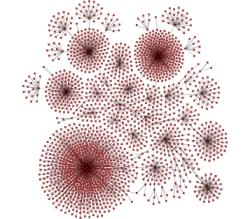
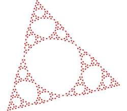
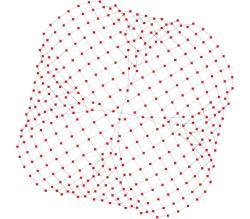
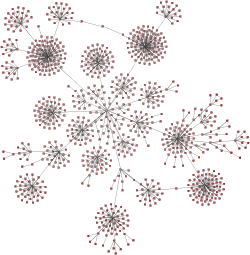
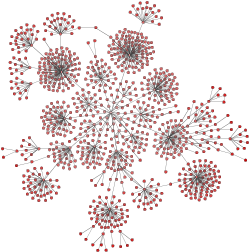
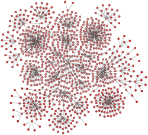
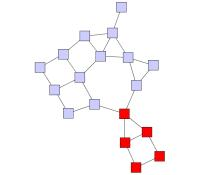
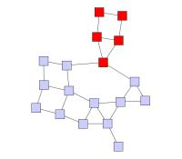
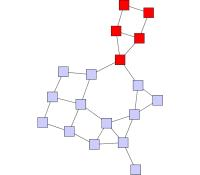

| Organic Layout Style | ||
|---|---|---|
| Prev | Chapter 5. Automatic Graph Layout | Next |
This section presents the organic layout style.
The organic layout style is based on the force-directed layout paradigm. When calculating a layout, the nodes are considered to be physical objects with mutually repulsive forces, like, e.g., protons or electrons. The connections between nodes also follow the physical analogy and are considered to be springs attached to the pair of nodes. These springs produce repulsive or attractive forces between their end points if they are too short or too long. The layout algorithm simulates these physical forces and rearranges the positions of the nodes in such a way that the sum of the forces emitted by the nodes and the edges reaches a (local) minimum.
Resulting layouts often expose the inherent symmetric and clustered structure of a graph, they show a well-balanced distribution of nodes and have few edge crossings.
Figure 5.56. Samples of the organic layout style
|

|

|

|
| A diagram that represents mount point relationships in a shared file system. | The inherent symmetry of this recursively defined graph gets exposed nicely. | Symmetry in a grid where the corners are connected. |
This layout style is well suited for the visualization of highly connected backbone regions with attached peripheral ring or star structures. These structurally different regions of a network can be easily identified by looking at a drawing produced by organic layout algorithms.
The organic layout style presents a multi-purpose layout for undirected graphs. It produces clear representations of complex networks and is especially fit for application areas such as:
Table 5.36, “Relevant classes for this style” lists the relevant classes for the organic layout style.
Table 5.36. Relevant classes for this style
| Classname | Description |
|---|---|
| SmartOrganicLayouter |
Main algorithm. See the description below. |
| InteractiveOrganicLayouter |
This class provides organic layout in an interactive environment where a user directly manipulates a diagram and updates to the diagram's layout are calculated continuously. See the description of this class in the section called “Interactive Organic Layout”. |
Besides SmartOrganicLayouter (SOL), the yFiles diagramming library includes a legacy layout algorithm for the organic layout style, class OrganicLayouter. SOL supersedes this class and adds features to prevent node (label) overlaps and to keep minimum distances between the nodes. See also the section called “Related Layout Algorithms”.
Class SmartOrganicLayouter is an
organic layout provider that supports both complete re-layout of a given diagram
as well as incremental layout where only a subset of a diagram should be rearranged.
is an
organic layout provider that supports both complete re-layout of a given diagram
as well as incremental layout where only a subset of a diagram should be rearranged.
One of the strengths of SmartOrganicLayouter is its ability to control the ratio of quality versus running time, as well as its ability to produce organic layouts while guaranteeing the absence of node overlaps. Additionally, SOL also prevents node label overlaps and keeps minimum distances between nodes.
SmartOrganicLayouter provides a set of options that influence the layout behavior.
| Preferred Edge Length | |
| API | void setPreferredEdgeLength(double preferredLength) |
| Description |
Allows to specify the general preferred length of all edges. The layout algorithm tries to arrange the nodes in such a way that the edges have the desired edge length. If "Node Size Aware" is checked, then the edge length is measured from node border to node border. Otherwise, the edge length is measured from node center to node center.
To specify the preferred edge length for each edge individually, a data
provider holding such supplemental layout data can be bound to the graph.
The data provider is expected to be registered with the graph using the
PREFERRED_EDGE_LENGTH_DATA |
| Node Size Aware | |
| API | void setNodeSizeAware(boolean enabled) |
| Description | Whether or not to obey the size of the nodes when calculating the layout. The distance between two nodes is calculated with respect to the node sizes, i.e., for equal preferred edge lengths, activating this feature will lead to bigger layouts. Note that enabling "Consider Node Labels" also enables this property. |
| Consider Node Labels | |
| API | void setConsiderNodeLabelsEnabled(boolean enabled) |
| Description | Enables node label-aware layout calculation. Note that enabling this option also enables the "Node Size Aware" property. |
| Node Overlaps Allowed | |
| API | void setNodeOverlapsAllowed(boolean allowed) |
| Description | Whether or not nodes are allowed to overlap. If this feature is disabled, the "Minimal Node Distance" will be used to arrange the nodes in such a way that the given distance will be obeyed. |
| Minimal Node Distance | |
| API | void setMinimalNodeDistance(double distance) |
| Description | The minimal node distance which will be used if "Node Overlaps Allowed" is disabled. |
| Compactness | |
| API | void setCompactness(double compactness) |
| Description | Adjusting this value can lead to a variety of differing layouts. For small values, the resulting layout will use a lot of space and nodes tend to be far away from each other. Values around 0.5 lead to evenly distributed nodes, whereas values near 1.0 produce highly compact layouts. |
Figure 5.57, “Layout results when using different compactness settings” shows the results of layout calculations using different compactness values.
Figure 5.57. Layout results when using different compactness settings
|

|

|

|
| Compactness = 0.2 | Compactness = 0.5 | Compactness = 0.9 |
| Output Restriction | |
| API | void setOutputRestriction(OutputRestriction restriction) |
| Description |
Allows to impose so-called "output restrictions" on the result of the layout calculcation. More precisely, the layout result can be specified to fit into a (simple) geometric shape, like, e.g., a rectangle or a circle. Also, the layout result can be restricted to a specified aspect ratio.
Class OutputRestriction |
| Quality/Time Ratio | |
| API | void setQualityTimeRatio(double ratio) |
| Description | This setting can be used to adjust the quality versus the running time of the layout algorithm. Small values lead to short running times, while greater values result in better quality. For large graph structures (hundreds and thousands of nodes) it is advisable to begin with smaller values and to gradually increase them. |
| Maximum Duration | |
| API | void setMaximumDuration(long duration) |
| Description | Sets the maximal duration of the layout process in milliseconds. If this upper bound is hit during the layout process, the quality of the layout may not be optimal. Increasing this values increases the likeliness of an optimal layout. |
| Deterministic | |
| API | void setDeterministic(boolean enabled) |
| Description | Whether or not the layout process should be deterministic. In deterministic mode the layout algorithm produces identical results for identical input graphs and identical settings. |
By means of the following setter method, SmartOrganicLayouter can be configured to use multiple threads for the layout calculation. The underlying multi-threading support is described in the section called “Multi-threading Support”.
| Multi-threading | |
| API | void setMultiThreadingAllowed(boolean multiThreadingAllowed) |
| Description | Whether or not the algorithm may calculate the layout using multiple threads. |
SmartOrganicLayouter supports different kinds of incremental layout strategies through the "Scope" feature.
The setScope(byte) method determines the set of nodes from the graph that should be processed.
In conjunction with a specified subset of the nodes of a graph, this method can
be used to switch between non-incremental and incremental layout.
method determines the set of nodes from the graph that should be processed.
In conjunction with a specified subset of the nodes of a graph, this method can
be used to switch between non-incremental and incremental layout.
By default, SOL recomputes the entire layout of a given graph, i.e., it performs
a non-incremental layout.
When only a subset of the graph should be rearranged, i.e., when the scope is changed
from its default value, a data provider holding the selection state for each node
is looked up.
The data provider is expected to be registered with the graph using
NODE_SUBSET_DATA look-up key.
The specified subset of nodes is then arranged in an incremental manner.
look-up key.
The specified subset of nodes is then arranged in an incremental manner.
The following scope constants are available:
SCOPE_ALL |
|
| Description | The whole graph will be considered for layout, i.e., a complete re-layout will be calculated. This is the default setting. |
SCOPE_MAINLY_SUBSET |
|
| Description | The selected nodes will be rearranged. The unselected nodes are only allowed to move to a certain degree. |
SCOPE_SUBSET |
|
| Description | Only the selected nodes will be rearranged. |
Figure 5.59, “Incremental layout of augmented graph” shows the resulting diagrams for different Scope settings for the initial (augmented) graph from Figure 5.58, “Initial graph and an augmentation”. Only (or mostly) the nodes from the specified subset get arranged by SmartOrganicLayouter. The other nodes keep their position.
Figure 5.59. Incremental layout of augmented graph
|

|

|

|
|
Setting "Scope" to SCOPE_ALL |
Setting "Scope" to SCOPE_SUBSET |
Setting "Scope" to SCOPE_MAINLY_SUBSET |
When only a subset of nodes should be rearranged, the "Node Overlaps Allowed" property should be enabled, otherwise unselected nodes might be moved to resolve node overlaps.
In unconnected graphs, i.e., graphs with multiple components, the following additional option can be used to improve the results of an incremental layout calculation.
void setSmartComponentLayoutEnabled(boolean enabled) |
|
| Description | When enabled, the ComponentLayouter that is used with this CanonicMultiStageLayouter is configured in such a way that separate components containing nodes which should not be moved will not be rearranged. |
Through a data provider that is registered with the graph using the look-up key
GROUP_NODE_MODE_DATA ,
further incremental layout behavior specifically for group nodes can be achieved.
See the corresponding description for this look-up key in Layout of Grouped Graphs.
,
further incremental layout behavior specifically for group nodes can be achieved.
See the corresponding description for this look-up key in Layout of Grouped Graphs.
The following table lists the data provider look-up keys that are recognized by SOL in conjunction with incremental layout.
Table 5.37. Data provider look-up keys
| Key | Element Type | Value Type | Description |
|---|---|---|---|
| NODE_SUBSET_DATA |
Node | boolean | For each node a boolean value indicating whether it should be treated as selected or not. |
SmartOrganicLayouter directly supports layout of grouped graphs. Both position and dimension of group nodes will be calculated by the algorithm.
Minimum size constraints for group nodes, which can be conveniently used in order
to accommodate for the size of its label, are handled by the MinimumSizeGroupBoundsCalculator instance that is registered with SmartOrganicLayouter.
If a data provider is registered with the graph using the look-up key
MINIMUM_NODE_SIZE_DPKEY
instance that is registered with SmartOrganicLayouter.
If a data provider is registered with the graph using the look-up key
MINIMUM_NODE_SIZE_DPKEY ,
any individual minimum size constraints for group nodes held by this data provider
are respected by default.
,
any individual minimum size constraints for group nodes held by this data provider
are respected by default.
Additional size requirements for group nodes can be handled by registering a custom
GroupBoundsCalculator implementation,
replacing the default MinimumSizeGroupBoundsCalculator instance.
implementation,
replacing the default MinimumSizeGroupBoundsCalculator instance.
void setGroupBoundsCalculator(GroupBoundsCalculator groupBoundsCalculator) |
|
| Description | Setting another GroupBoundsCalculator implementation. |
Using class
EllipticalGroupBoundsCalculator as shown in Example 5.32, “Setup for EllipticalGroupBoundsCalculator” enables
SmartOrganicLayouter to handle elliptical group node shapes.
as shown in Example 5.32, “Setup for EllipticalGroupBoundsCalculator” enables
SmartOrganicLayouter to handle elliptical group node shapes.
Example 5.32. Setup for EllipticalGroupBoundsCalculator
// 'graph' is of type y.layout.DefaultLayoutGraph.
SmartOrganicLayouter sol = new SmartOrganicLayouter();
sol.setNodeSizeAware(true);
// Add a data provider to the graph that is queried during layout calculation
// by the EllipticalGroupBoundsCalculator.
graph.addDataProvider(
EllipticalGroupBoundsCalculator.SHAPE_POINT_PROVIDER_DPKEY,
// For each node assume it is in fact an ellipse and return the predefined
// shape point provider implementation provided by class
// EllipticalGroupBoundsCalculator.
DataProviders.createConstantDataProvider(
new EllipticalGroupBoundsCalculator.EllipticalShapePointProvider()));
// Set EllipticalGroupBoundsCalculator to handle elliptical group nodes.
EllipticalGroupBoundsCalculator egbc = new EllipticalGroupBoundsCalculator();
sol.setGroupBoundsCalculator(egbc);
// Prepare all relevant information for the layout algorithm.
GroupLayoutConfigurator glc = new GroupLayoutConfigurator(graph);
glc.prepareAll();
new BufferedLayouter(sol).doLayout(graph);
glc.restoreAll();
By means of a data provider that is registered with the graph using the GROUP_NODE_MODE_DATA look-up key, fine-grained control over group node handling during layout calculation
can be achieved.
The following constants are available to instruct the algorithm how to treat a specific
group node:
look-up key, fine-grained control over group node handling during layout calculation
can be achieved.
The following constants are available to instruct the algorithm how to treat a specific
group node:
GROUP_NODE_MODE_NORMAL |
|
| Description | The contents of the group node will be processed by the layout algorithm. Also, the group node's size and position will be determined by the algorithm. |
GROUP_NODE_MODE_FIX_CONTENTS |
|
| Description | Size and position of the group node will be determined by the algorithm. The contents of the group node are not processed by the algorithm, but are moved with the group node. |
GROUP_NODE_MODE_FIX_BOUNDS |
|
| Description | The contents of the group node will be processed by the layout algorithm, however, with respect to the original bounds of the group node which will not change. |
Note that in conjunction with partitioned layout, only the first constant is supported.
Using the GROUP_NODE_MODE_FIX_CONTENTS or GROUP_NODE_MODE_FIX_BOUNDS
or GROUP_NODE_MODE_FIX_BOUNDS constant for group nodes also enables additional incremental layout behavior specifically
for group nodes.
constant for group nodes also enables additional incremental layout behavior specifically
for group nodes.
The following table lists the data provider look-up keys that are recognized by SOL in conjunction with grouped graphs.
Table 5.38. Data provider look-up keys
| Key | Element Type | Value Type | Description |
|---|---|---|---|
| GROUP_DPKEY |
Node | boolean | For each node a boolean value indicating whether it is a group node or not. |
| NODE_ID_DPKEY |
Node | Object | For each node an Object that serves as a unique ID. |
| PARENT_NODE_ID_DPKEY |
Node | Object | For each node an Object indicating the group node it belongs to. The Object matches the unique ID of a group node that is in the same graph. |
| GROUP_NODE_MODE_DATA |
Node | Object | For each group node an Object indicating how to proceed with it during the layout process. |
| MINIMUM_NODE_SIZE_DPKEY |
Node | YDimension |
For each group node a YDimension |
SmartOrganicLayouter provides support for so-called partitioned layout. This type of layout uses the notion of cells in a table-like grid structure into which nodes are placed. Each normal node of the graph is placed into a single cell and the contents of group nodes belong to the same single cell as the group node itself. The setup for partitioned layout is presented in the section called “Partition Grid”.
Figure 5.61, “Partitioned layout as calculated by SmartOrganicLayouter” shows a resulting partitioned layout as calculated by SmartOrganicLayouter. The visual representation as a table is rendered by a TableGroupNodeRealizer.
SmartOrganicLayouter's support for partitioned layout covers the configuration options below for normal nodes and group nodes. Depending on the kind of partition cell ID that is associated with a normal node, the layout algorithm will place the normal node:
Depending on the kind of the partition cell ID that is associated with a group node, the layout algorithm will place the group node such that:
A node contained in a group node can have either no partition cell ID configuration associated with it ('none') or a 'single cell' partition cell ID configuration. All nodes with the latter, however, need to use the same partition cell ID configuration.
In conjunction with the group node handling
option, partitioned layout calculation does not support group nodes that are associated
with group node mode constants other than GROUP_NODE_MODE_NORMAL .
.
The following table lists the data provider look-up keys that are recognized by SmartOrganicLayouter in conjunction with swimlane/partitioned layout.
Table 5.39. Data provider look-up keys
| Key | Element Type | Value Type | Description |
|---|---|---|---|
| PARTITION_GRID_DPKEY |
Graph | PartitionGrid |
A PartitionGrid |
| PARTITION_CELL_DPKEY |
Node | PartitionCellId |
For each node a PartitionCellId |
Edge labels can be placed automatically using the generic labeling support as described in the section called “Generic Labeling”, which is available with all yFiles layout algorithms. Additionally, SmartOrganicLayouter can be set up to take node labels into account during layout.
SmartOrganicLayouter provides support for node label-aware organic layout. Node labels do not need to be placed, but instead their size needs to be considered for the placement of adjacent graph elements. Taking node labels into consideration during layout calculation guarantees that they will not overlap nodes in the diagram.
Node label awareness is enabled using the "Consider Node Labels" property. See the description of the layout options in the section called “Drawing Style Options”.
SmartOrganicLayouter by default supports node halos as soon as they are declared. It considers any specified additional paddings around nodes, however, due to the straight-line routing of the edges, they can cross through these areas in the resulting diagram. Also, node halo overlaps may occur if:
The following table lists the data provider look-up keys that are recognized by SmartOrganicLayouter in conjunction with node halo support.
Table 5.40. Data provider look-up keys
| Key | Element Type | Value Type | Description |
|---|---|---|---|
| NODE_HALO_DPKEY |
Node | NodeHalo |
A NodeHalo |
Smart organic layout can choose between different strategies, combinations and configurations of a couple of related algorithms to control the running time versus the quality of the layout.
Using small values for property "Quality/Time Ratio," it is possible to produce acceptable layouts for huge graphs (thousands of nodes within seconds), whereas setting this value to greater values leads to high-quality layouts, which may take longer (up to a few minutes for hundreds of nodes).
SmartOrganicLayouter can be configured to produce significantly more or less compact layouts.
Small values for property "Compactness" lead to large area drawings with a relatively sparse node distribution. Values greater than 0.5 lead to artificially compacted layouts, and values next to 1.0 will produce layouts with near to minimal space allocations. Note that "Compactness" will be obeyed only for medium or high quality settings.
Using property "Node Overlaps Allowed," organic layout can be configured to guarantee the absence of node overlaps even for very dense graphs. Further improvements can be achieved using the "Consider Node Labels" property, which prevents that node label overlap with graph elements.
Additionally, using property "Minimal Node Distance," it is possible to specify a minimal node distance, i.e., it can be guaranteed that there will be a certain amount of space around each node, which is not occupied by other nodes.
Layout module SmartOrganicLayoutModule.java presents the setup of class SmartOrganicLayouter in an application context.
Class SmartOrganicLayouter knows a number of data provider keys which are used to retrieve supplemental layout data for a graph's elements. The data is bound to the graph by means of a data provider which is registered using a given look-up key. Table 5.41, “Data provider look-up keys” lists all look-up keys that SmartOrganicLayouter tests during the layout process in order to query supplemental data.
Binding supplemental layout data to a graph is described in the section called “Providing Supplemental Layout Data”.
Table 5.41. Data provider look-up keys
| Key | Element Type | Value Type | Description |
|---|---|---|---|
| GROUP_DPKEY |
Node | boolean | For each node a boolean value indicating whether it is a group node or not. |
| NODE_ID_DPKEY |
Node | Object | For each node an Object that serves as a unique ID. |
| PARENT_NODE_ID_DPKEY |
Node | Object | For each node an Object indicating the group node it belongs to. The Object matches the unique ID of a group node that is in the same graph. |
| GROUP_NODE_MODE_DATA |
Node | Object | For each group node an Object indicating how to proceed with it during the layout process. |
| NODE_SUBSET_DATA |
Node | boolean | For each node a boolean value indicating whether it should be treated as selected or not. |
| PREFERRED_EDGE_LENGTH_DATA |
Edge | int | For each edge an integral value that indicates its preferred length. |
| MINIMUM_NODE_SIZE_DPKEY |
Node | YDimension |
For each group node a YDimension |
| NODE_HALO_DPKEY |
Node | NodeHalo |
A NodeHalo |
| ABORT_HANDLER_DPKEY |
Graph | AbortHandler |
An AbortHandler |
Setup of a grouped graph's hierarchy of nodes and using the grouping keys (GROUP_DPKEY, NODE_ID_DPKEY, and PARENT_NODE_ID_DPKEY) is described in detail in the section called “Setup for Layout”.
The yFiles diagramming library includes an other layout algorithm that offers similar
layout results compared to SOL, class OrganicLayouter (OL).
SOL supersedes this class and adds features to prevent node (label) overlaps and
to keep minimum distances between the nodes.
(OL).
SOL supersedes this class and adds features to prevent node (label) overlaps and
to keep minimum distances between the nodes.
|
Copyright ©2004-2015, yWorks GmbH. All rights reserved. |